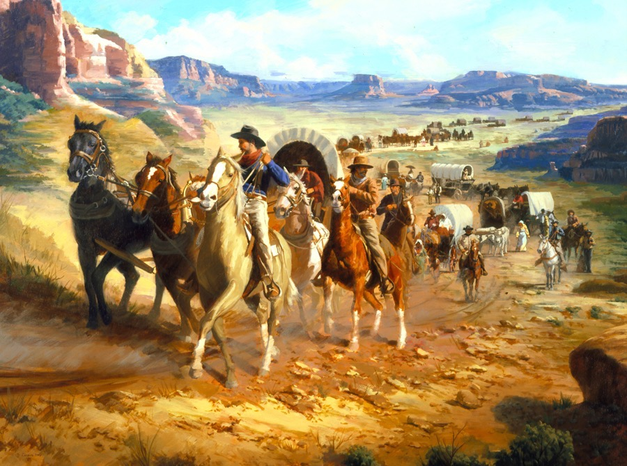

Topic: Shay's Rebellion,
Farmers are protesting against the government, but why? While farmers struggled with post-war currency and debt with the high taxes and unfair debt collection, partnerships made their lives harder. In a cry for help in 1785, deserate farmers from western Massachusetts petitioned the state legislature, demanding relief. They sought paper money redemption, lower taxes, and an end to debtor imprisonment. The state government, dominated by wealthy merchants and creditors from the eastern part of the state, remained unmoved. In August 1786, hell broke out led by veterans like Dainel Shays, and they began to take matters into their own hands. They formed armed groups that prevented courts from convening, effectively halting debt collection proceedings. Shays, a former captain in the Continental Army, emerged as a natural leader, his charisma and military experience uniting the disparate groups of farmers. Shay's Rebellion, was unsuccessful, had a great impact on the young nation. It exposed the weaknesses of the Articles of Confederation, the first form of government adopted by the United States, which lacked the power to raise a standing army and regulate commerce. But this was a wake-up call, showing the need for a stronger central government.
latest news



People are now settling in the west.
People are moving more westward for a better future...